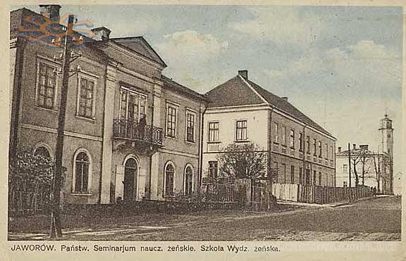

Яворів — місто в Україні, має статус районного значення і є районним центром Львівської області
Розташоване над річкою Шкло, (притокою Сяну) , на відстані 50 км на північний захід від обласного центру міста Львів. Населення становить 15 тис. осіб(у 1968 — 8 900, у 2001 — 13 500 осіб) .
Виникло як хліборобське, торгове і ремісниче поселення на торговельному шляху Львів-Ярослав. У Яворові є залізнична станція, місто має автобусне сполучення зі Львовом, сусідніми районами та кількома прикордонними містами Республіки Польща. За 5 км від центру міста розташоване Яворівське озеро.
